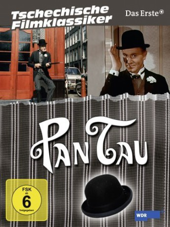

Alternativ: Abenteuer des Herrn Tau, Die (Originaltitel)
 
 IMDB-Wertung: 7.4 / 10
IMDB-Wertung: 7.4 / 10  Metascore: 0
Metascore: 0 
Pan Tau selbst ist ein stets freundlich lächelnder, sehr eleganter Herr im schwarzen Anzug mit einer Melone, einem Regenschirm und einer weißen Nelke im Knopfloch. Und Pan Tau kann zaubern. Mittels einer bestimmten Handbewegung an seiner Melone lässt er zum Beispiel Dinge erscheinen oder verwandelt sich selbst in eine kleine Puppe. Pan Tau spricht außerdem nicht, zumindest nicht in den ersten 26 Folgen. Stattdessen kommuniziert er auf pantomimisch-tänzerische Art mit den Menschen, vornehmlich Kindern, zeigt sich deren Eltern nie und bleibt somit für diese durch Verstecken oder die erwähnte Miniaturisierung unsichtbar. Die Serie greift auf diese Weise den alten Kindertraum eines unsichtbaren, liebevollen und beschützenden Freundes an der Seite eines Kindes auf.
Jahr: 1970
Dauer: 30 Minuten
FSK: 6
Land: Tschechoslowakei Studio: UFATonspuren:
Untertitel:
Auflösung: SD (922x716) Größe: 1310 MB
Genre: Drama, Komödie, Abenteuer, Fantasy, Familie, TV-Serie
Regisseur: Jindrich Polák
Drehbuch: Ceskoslovenská Televize
Soundtrack:
Darsteller:
- Otto Simánek als Pan Tau / ... 33 episodes, 1970-1978
- Frantisek Filipovský als Grandfather Urban / ... 14 episodes, 1970-1975
- Jirina Bohdalová als Helene Urban / ... 14 episodes, 1970-1975
- Vladimír Mensík als Josef Urban / ... 13 episodes, 1975
- Gustav Bubník als Boy / ... 13 episodes, 1975
- Karel Höger als Narrator 13 episodes, 1975
- Vlastimil Brodský als Málek / ... 7 episodes, 1977-1978
- Jan Werich als Pan Viola / ... 7 episodes, 1972
- Josef Filip als Emil 7 episodes, 1970-1972
- Michal Hofbauer als Otik / ... 7 episodes, 1977-1978
- Zdena Hadrbolcová als Málková / ... 7 episodes, 1977-1978
- Josef Bláha als Chief Gangster / ... 7 episodes, 1977-1978
- Frantisek Peterka als 6 episodes, 1975
- Jirí Kúkol als 6 episodes, 1975
- Jan Skopecek als Director / ... 5 episodes, 1972-1978
- Karel Augusta als Hostinský 5 episodes, 1975-1978
- Josef Kemr als Hanousek 4 episodes, 1975-1978
- Jirí Sovák als Emil's Father / ... 3 episodes, 1970-1971
- Slávka Budínová als Maminka 3 episodes, 1970-1971
- Josef Dvorák als Kalous / ... 3 episodes, 1977
- Josef Beyvl als Grandfather / ... 3 episodes, 1970-1971
- Blanka Kratka als Renáta 3 episodes, 1970-1971
- Mirko Musil als Man 3 episodes, 1972
- Jana Brejchová als Stella 3 episodes, 1977
- Frantisek Husák als Pilot JZD / ... 3 episodes, 1977
- Mahulena Bocanová als Veronika 3 episodes, 1977
- Petr Cepek als Orlando 3 episodes, 1977
- Milos Kopecký als Pawnbroker / ... 2 episodes, 1972
- Václav Lohniský als Hurta / ... 2 episodes, 1978
- Karel Hábl als Instructor 2 episodes, 1970-1971
- Frantisek Kovárík als Cestovatel / ... 2 episodes, 1975
- Jirí Lír als Valet 2 episodes, 1972
- Jaroslav Stercl als Attendant / ... 2 episodes, 1975
- Julie Juristová als Tereszka / ... 2 episodes, 1978
- Jirí Lábus als Air Traffic Controller / ... 2 episodes, 1977
- Milena Zahrynowska als Matka 2 episodes, 1972
- Marie Rosulková als Babicka 2 episodes, 1975-1978
- Petr Nározný als Father / ... 2 episodes, 1977
- Eduard Dubský als TV actor 2 episodes, 1972
- Vít Olmer als Reditel safari 2 episodes, 1977
- Dagmar Patrasová als Letuska / ... 2 episodes, 1977
- Zdenek Srstka als Driver / ... 2 episodes, 1977
- Viktor Maurer als 2 episodes, 1972-1977
- Stanislav Fiser als 2 episodes, 1972
- Lenka Termerová als Kalousová 2 episodes, 1977
- Milan Nedela als 2 episodes, 1972
- Svatopluk Benes als 2 episodes, 1975
- Zdenek Díte als 2 episodes, 1975
- Frantisek Hanus als 2 episodes, 1975
- Jana Hlavácová als 2 episodes, 1975
Datei: X:\Kinder Serien\PanTau\1.01 Pan Tau tritt auf.mkv seit 10.12.2017
Festplatte: Kinder-Filme+Trick
 Es gibt insgesamt 56 Filme in der Gruppe 'Kinder Serien'
Es gibt insgesamt 56 Filme in der Gruppe 'Kinder Serien'
")